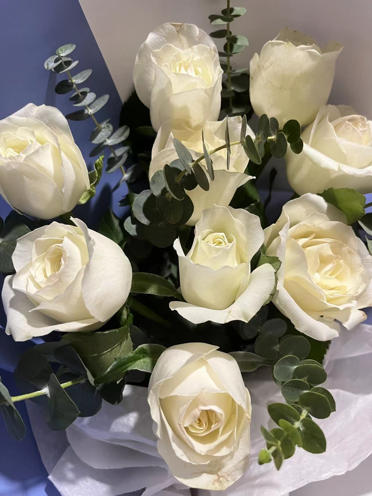
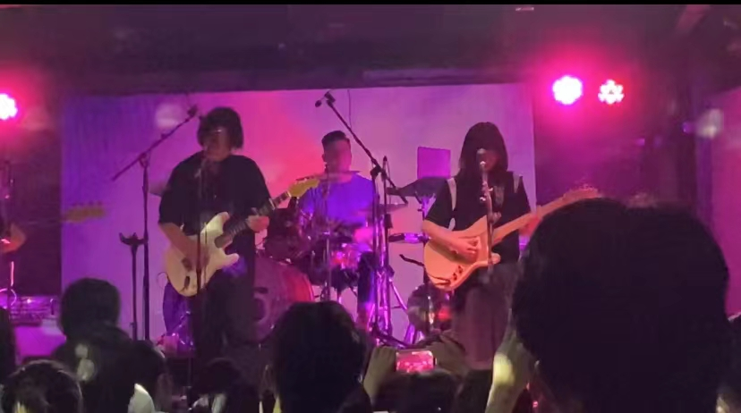
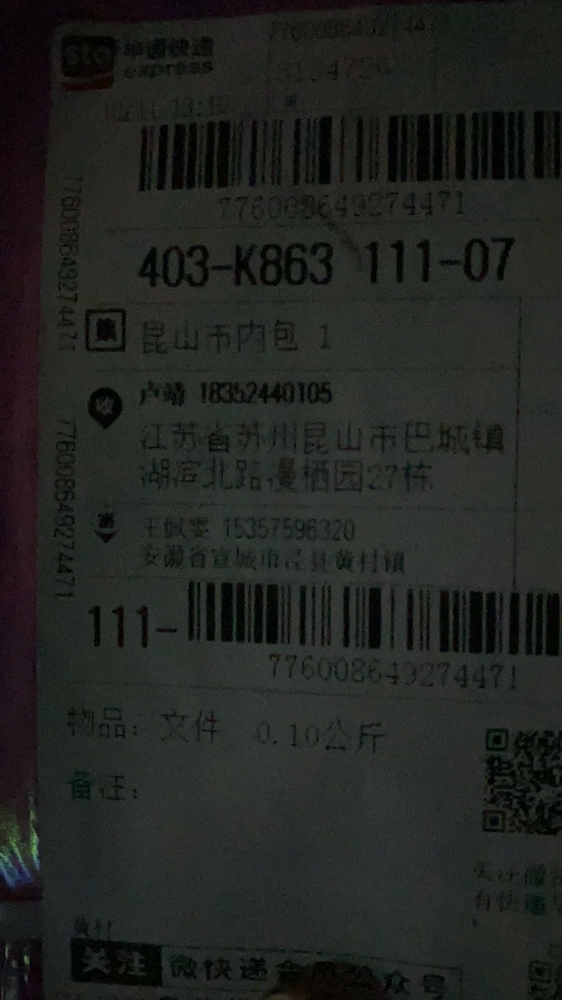
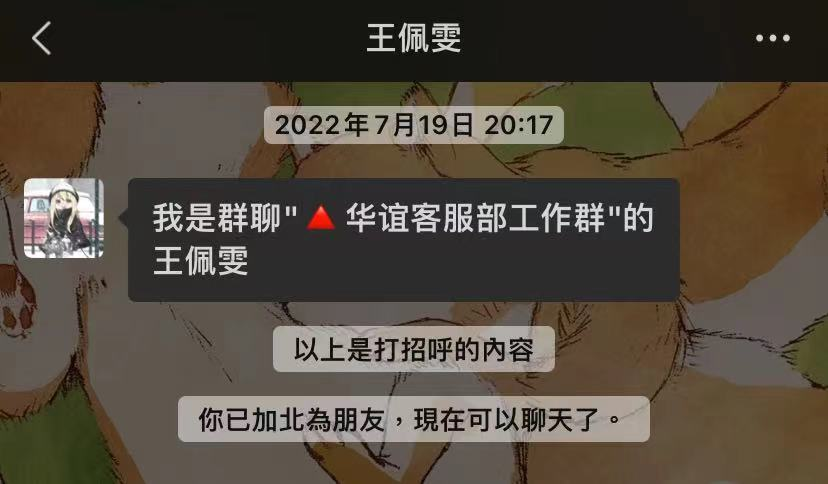

Sobre nosotros
咋说呢，就碰巧被我撞见了嘛，然后费尽心思给骗到了手，就是这么简单的事情。
有一段时间挺喜欢看斯蒂芬.金的小说，记得好像是在肖申克的救赎那本书后面有几个他的短篇集，当时里面有一句话我挺喜欢的
It's not the matter how the story is, but the people who told this story.既然遇见了，那么感谢相遇，讲好我们的故事。
讲故事的人，往往比故事本身更加精彩。
写给BOBO
我说不出来为什么爱你，但我知道，你就是我不爱别人的理由
——《虞美人盛开的山坡》
坐在椅子上，对着屏幕发呆，想了很久，不知道该从哪里写起，但我确确实实是在想你。
"生日快乐"很抱歉晚了这么久才让你看见，也只能通过好饭不怕晚来安慰你
还记得我第一封信给你写的吗，我说你的眼睛很漂亮，让我印象深刻。是的，到现在我还是这么认为，你的眼睛很漂亮，也不值得因我而流泪。虽然现实恰恰相反。 哈哈哈哈
"祝你生日快乐！！"我之前不止一次的说过：当我提笔或者当我想要写点什么的时候，我的大脑总是会一片空白，我会想到很多很多东西，但我却抓不住那个总结的点。就好像那被堵住了的大坝水库 那怕上游蓄水库再波涛汹涌，我也找不到打开泄洪口的关键钥匙。写到现在，你应该也能看出来，我们吵架也是，我总是无言、无言。。哎，太像了，我现在的感觉，太像了。
亲爱的寿星:
生日快乐!!!
我们已经有96天没有见面了。我很想你，但也有愧疚，毕竟之前夸下海口说要在一月份去找你。结果食言了。所以感觉说想你有点虚伪，但我真的很想你。
可能是初中语文老师给我的影响吧，我觉得我多少有些意识流，喜欢想一些很内心的东西，我总觉得躺在一片草地上吹微风下是一件很美的事情，可以啥都不干就吹吹风，就觉得很棒了。
好吧，其实我想坐在你旁边，听你讲你曾经的故事 讲你现在遇到的不愉快 讲你心中的不安与秘密。
其实我也想陪你吃一日三餐 陪你早睡早起 陪你按部就班的享受每一天的生活。
于我而言，你的心情愉快和身体健康是我最大的期望。
然而我为此什么也做不了 我怪我沉默不愿倾诉 怪我不肯让你走进你这座孤岛，也怪自己 离得太远。
偶然见看到一段话：“你怪我不开心的事从不讲给你，你说我总是在需要人陪伴的时候忘记有你在身旁，
可你怎会明白，我的心事堆积成云，再下成倾盆大雨，可就是舍不得淋湿你。”
大概就是这样的想法，我明白。可是我不想看着你一个人被淋湿，且让你淋雨的还是我。。。
吧啦吧啦，这个小网页从十月开始策划，结果到了一月才开始写，中间放弃过，也因懒懈怠过，写的也不是很多，但也不少。就先写这么多吧，也不知道还有啥想说的了。
哦，还有一句：“我爱你~”
Story
of
US
第一次一起通关游戏
那段时间，我们一起玩了双人成行，这是段美妙的记忆，我们互相吹捧夸赞对方厉害
我们也在小象被分肢而感到难过，我们也在水晶球中互相扔雪球嬉戏打闹
之后我们也玩了其他的游戏：Escape Simulator、雀魂麻将。

有一说一，你雀魂玩的比我好。怎么感觉我玩啥游戏到最后都没别人厉害。。。。。
我们以后也会玩更多的游戏的，对吧 2020.11
第一次看livehouse
真的没想到能请到您来看呢，也太好约了（不是）
Ps:还能约到两次我们除了工作，私下的交集多亏了演出吧哈哈哈哈哈  2020.08.28
第一次收到信
哈哈哈哈没想到我也会收到
现在还很开心呢
我被你勾了神
虽然那个包裹很烂，但我真的很喜欢。

一切从这里开始
7月去兼职，19号才加到微信哈哈哈哈哈哈。
我们的故事，也就开始了~
